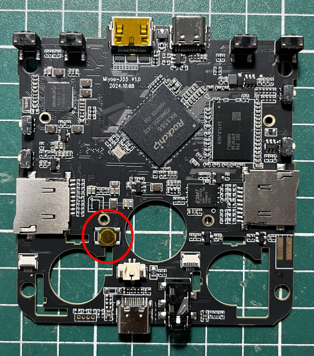

司徒目前使用GNU GCC編譯器，燒錄工具則是使用xrock，安裝方式如下：
$ sudo apt-get install gcc-aarch64* -y $ cd $ git clone https://github.com/xboot/xrock $ cd xrock $ make -j4 $ sudo make install
目前開發測試是燒錄到SPI Flash，因此，需要進入MASKROM模式

$ cd $ git clone https://github.com/steward-fu/miyoo-flip $ cd miyoo-flip/bare-metal $ make $ make flash